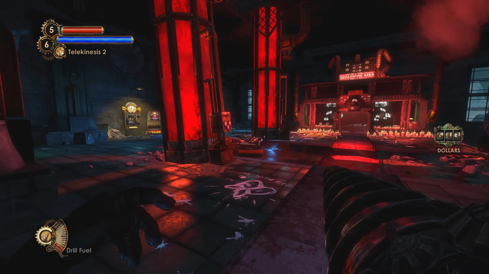
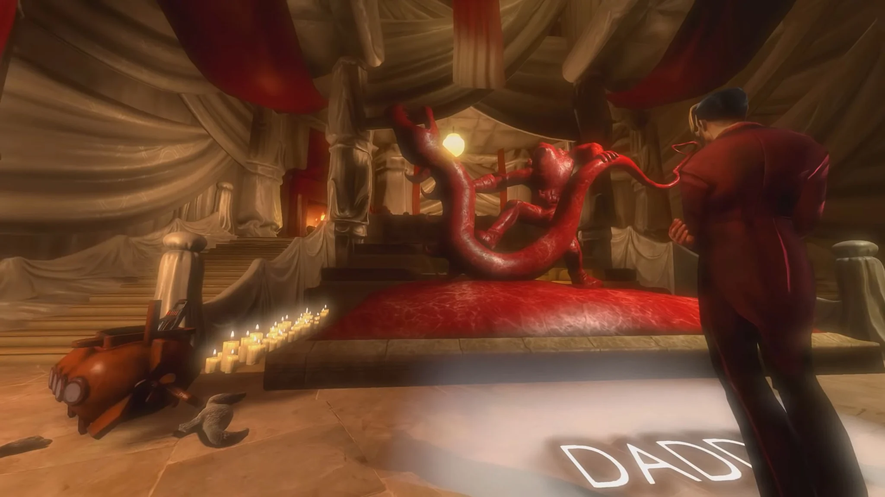
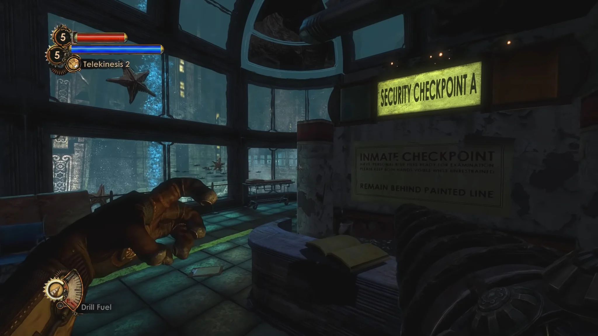
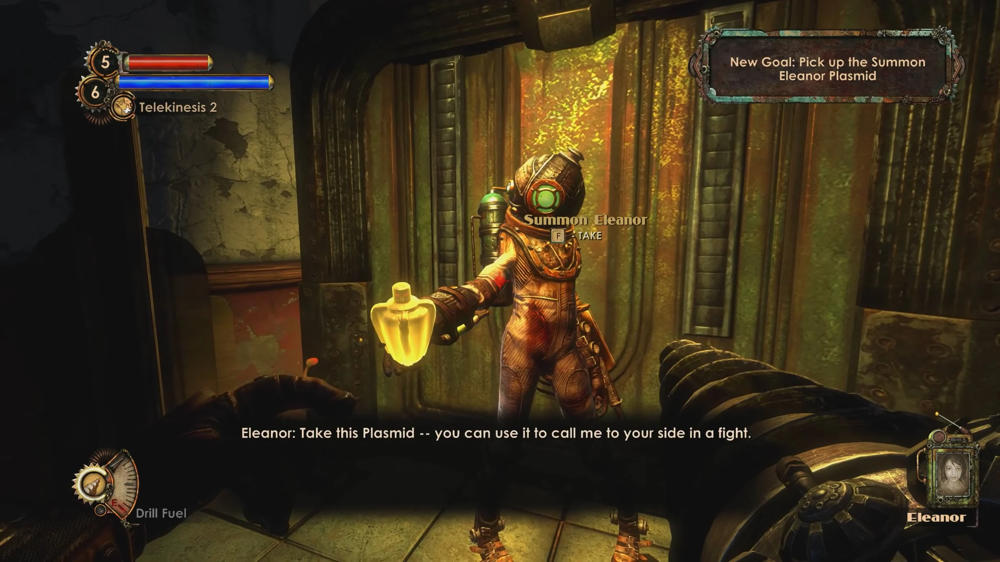
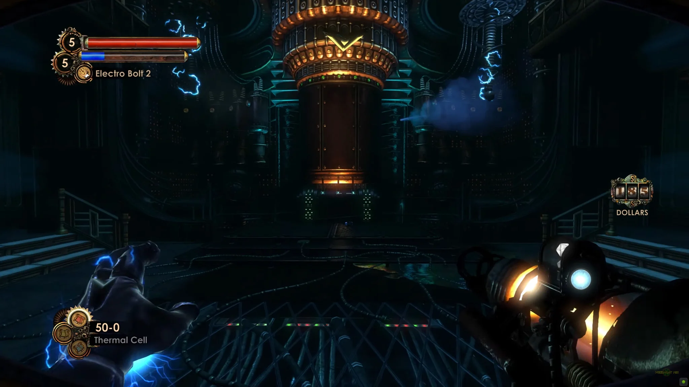
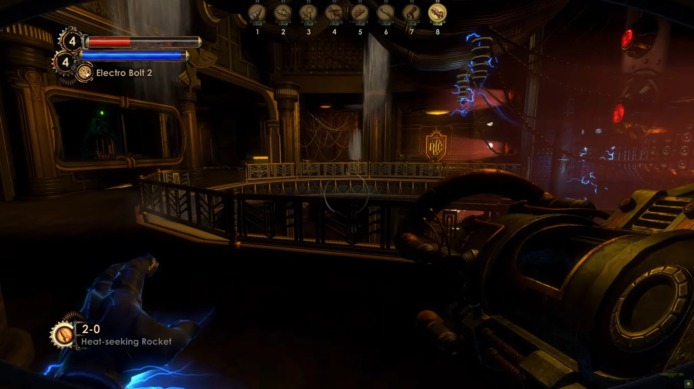
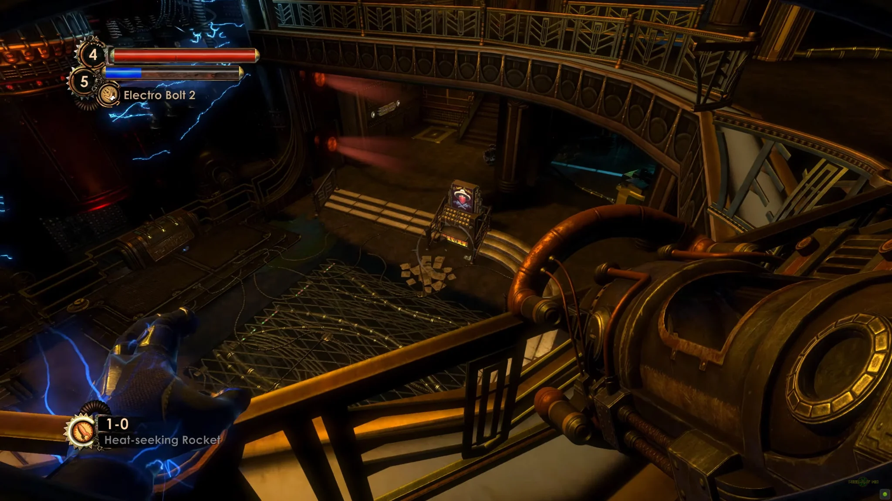
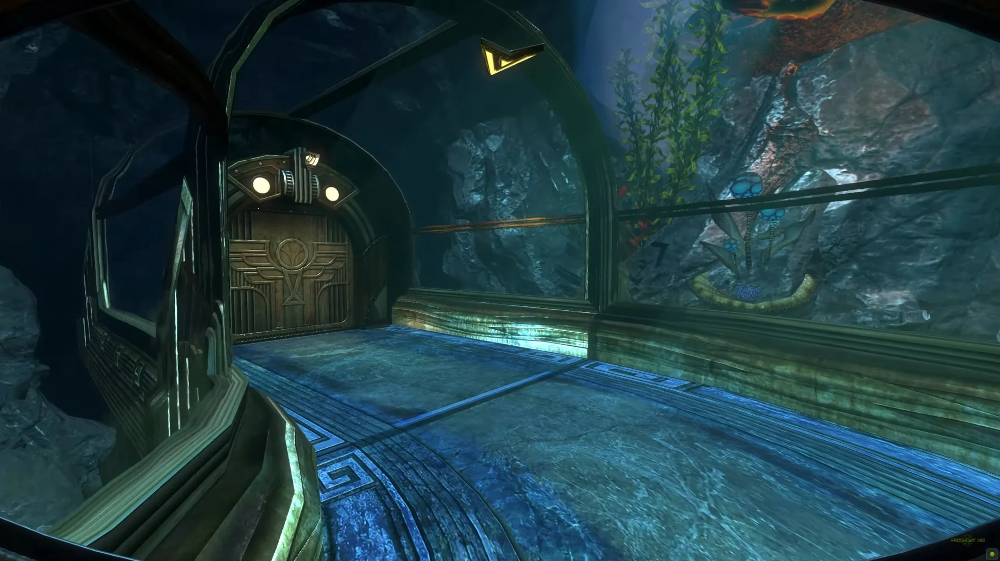

BIOSHOCK 2
& MINERVA’S DEN.
A troubled level, a new point of view, and the finale of an acclaimed expansion.
A specialist brought into the heart of Rapture.
I joined BioShock 2 as a contract Cinematic Scripter. In a game that stays in first person, this was not traditional cutscene work. It meant collaborating with level designers to take ownership of highly scripted gameplay beats: precise timing, environmental choreography and the details that make authored moments feel seamless.
Later, when outsourced levels were brought back in-house for major reworking, I was given responsibility for Persephone Outer. After the main game, I contributed to two DLC releases, including the story expansion Minerva’s Den.
Persephone Outer: a level in search of its story.
Persephone Outer had originally been conceived as an intoxication-induced fever dream. Unique, surreal artwork had been produced to sell the player’s altered state, but the premise did not sit comfortably within the broader narrative.
The team developed a new direction: letting players experience part of Rapture through the eyes of a Little Sister. This gave the existing visual work a natural place in the fiction, instead of discarding a significant investment in custom assets.


From repetition to motivation.
The Little Sister perspective was a collaborative idea. My particular contribution was to reshape the sequence’s objectives. The original plan asked players to perform three ADAM gathers on corpses, a familiar activity that felt too generic as the central goal.
I advocated for making those gathers optional, and instead building the main objectives around recovering three pieces of a Big Sister suit for Eleanor: the suit, the spiked gloves and the helmet.
The proposal was widely supported. It kept the established gathering mechanic available while making the player’s primary actions more intentional and more closely tied to the story.
“Keep the familiar mechanic optional. Make the objective mean something.”


A substantial redesign under a tight deadline.
Over approximately two to three months, I overhauled Persephone Outer. The work was very well received internally and led to an offer of a full-time position following completion of BioShock 2.
The experience remains a clear example of the kind of design challenge I enjoy: finding a solution that serves the story, strengthens the player’s motivation and respects the realities of production.
The Thinker: designing the finale.
I went on to contribute to two BioShock 2 DLC releases: a non-story challenge-level pack and the narrative expansion Minerva’s Den.
For Minerva’s Den, I designed the final level, The Thinker, named after Rapture’s central supercomputer, which controlled the city’s systems. This is where the player confronts the main antagonist and the story reaches its conclusion.
It brought together the things I value most in level design: spatial progression, scripted encounters, dramatic pacing and the payoff of a larger narrative.



